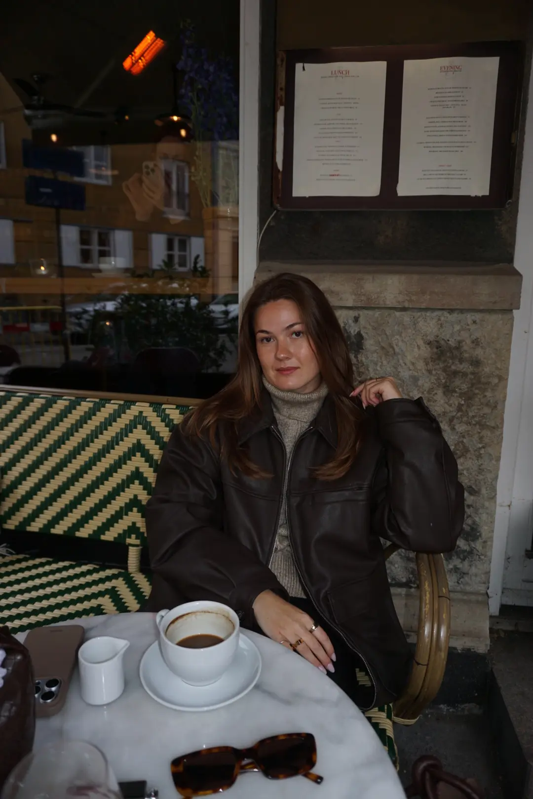

ABOUT
About The Autumn Edit
The Autumn Edit is a small collection of ideas for slowing down and enjoying the season. It started as a bucketlist of 30 things to romanticize this autumn, and grew into a guide to what to wear when the leaves start to fall.
Use the bucketlist to check off what you have done, or print it for later. Visit the fashion page for trends, colours and outfit inspiration.
Made by Karoline as part of a UX design course.
